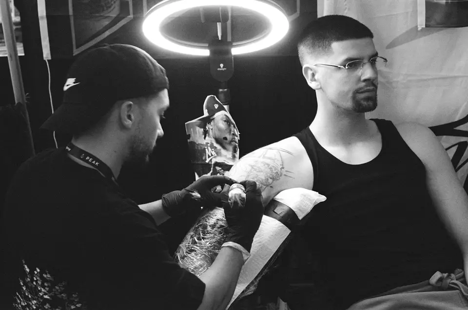
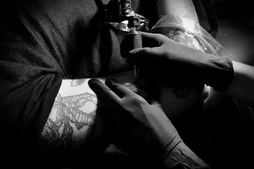

Sobre el artista
Quién es
Tomás Ferreyra.
No empezó con una máquina. Empezó con un lápiz.
Pasó años dibujando retratos a grafito antes de tatuar. De ahí viene su obsesión por la luz, la sombra y la proporción sobre la piel.
Su firma es el degradé suave: grises que respiran y negros que no se apagan con los años.
Hoy hace una sola pieza por día, para que cada sesión tenga el tiempo que necesita.